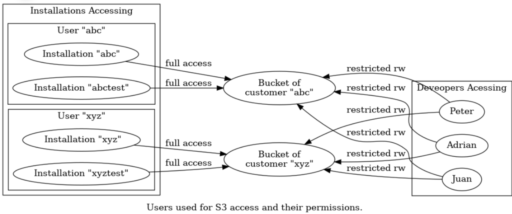
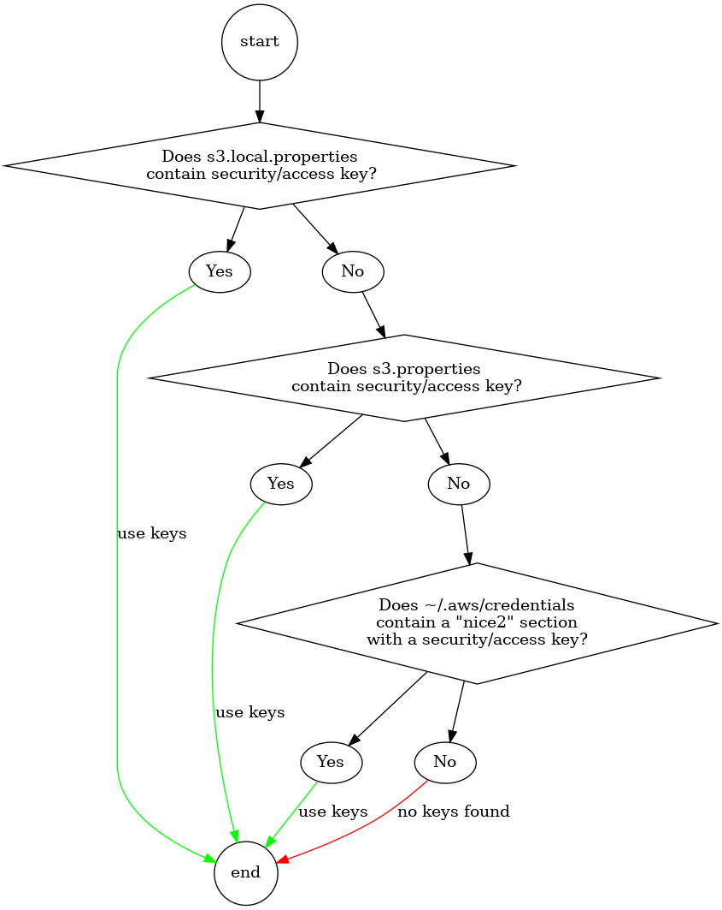

Setup
-
S3 storage is used for the tocco installations Object-Storage
(Objects such as documents, images, videos that are uploaded or
generated in the Tocco ERP) -
There is one bucket per customer. Production, test system as
well as when developing locally, the same bucket is used. -
Configuration is done via the s3.properties file Ansible and S3 API
All buckets are created by Ansible. There should be no need to change
the configuration manually.
-
Die Objekte werden mittels Referenzzählung dedupliziert. Sobald der
Referenzzähler Null erreicht, wird das Objekt zum Entfernen markiert.
Das Objekt selbst und der Verweis in der Tabelle _nice_binary werden
jedoch nicht sofort entfernt.
Dies aus mehreren Gründen:
- Das Entfernen von S3-Objekten ist langsam. Eine synchrone
Durchführung würde zu Verzögerungen führen. - Falls ein Backup der Datenbank wiederhergestellt werden muss, ist es
nicht notwendig, auch ein Backup der Objekte wiederherzustellen. -
Es gibt keine Möglichkeit, atomare und damit konsistente Backups zu
erstellen, d. h. Backups, bei denen gewährleistet ist, dass die
Datenbank und der S3-Speicher denselben Satz von Objekten enthalten. -
Buckets werden von allen Installationen eines Kunden gemeinsam
genutzt, und es gibt keine zuverlässige Methode, um festzustellen, ob
ein Objekt noch von einer anderen Installation verwendet wird. -
Objekte können nicht atomar als Teil einer DB-Transaktion entfernt
werden. Objekte müssen entfernt werden, nachdem ihre Entfernung in
die DB übertragen wurde.

-
Developers Access
-
Jeder Entwickler hat ein Konto, das Lese- und Schreibzugriff auf die
Buckets aller Kunden ermöglicht. - Developers cannot remove any objects or change permissions.
-
Jeder Kunde hat einen eigenen Benutzer, dessen Zugang auf seinen
jeweiligen Bucket beschränkt ist. -
Installationen eines Kunden, ob Produktion oder Test,verwendet
diesen einen Bucket -
Die Berechtigungen werden über eine S3-Policy erteilt.
Die Policy selbst wird von Ansible festgelegt -
Die Credentials können in s3.[local.]properties konfiguriert werden.
Sollten in diesen Dateien keine Anmeldedaten gefunden werden, werden
die Anmeldedaten aus dem Abschnitt [nice2] in ~/.aws/credentials
verwendet.
Installation User

- Das Entfernen von S3-Objekten ist langsam. Eine synchrone